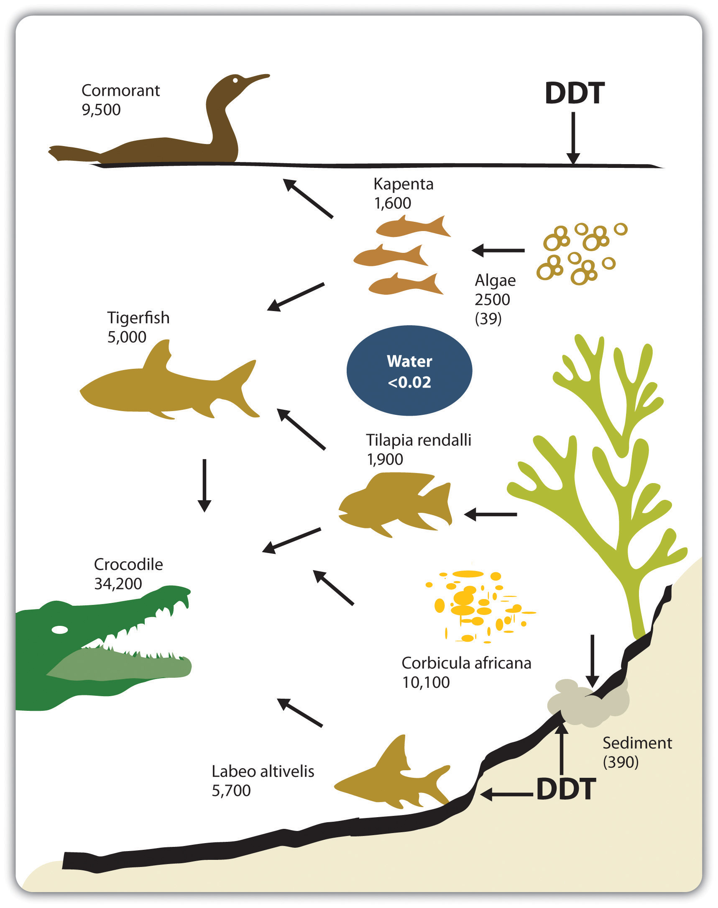
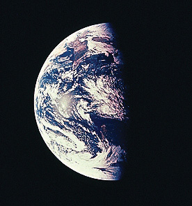
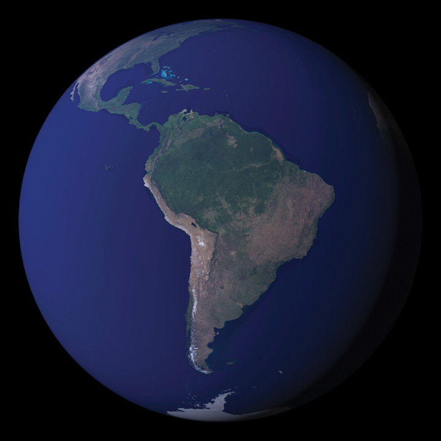

Sustainability innovations, currently driven by a subset of today’s entrepreneurial actors, represent the new generation of business responses to health, ecological, and social concerns. The entrepreneurial innovations we will discuss in this book reflect emerging scientific knowledge, widening public concern, and government regulation directed toward a cleaner economy. The US roots of today’s sustainability innovations go back to the 1960s, when health and environmental problems became considerably more visible. By 1970, the issues had intensified such that both government and business had to address the growing public worries. The US environmental regulatory framework that emerged in the 1970s was a response to growing empirical evidence that the post–World War II design of industrial activity was an increasing threat to human health and environmental system functioning.
We must keep in mind, however, that industrialization and in particular the commercial system that emerged post–World War II delivered considerable advantages to a global population. To state the obvious: there have been profoundly important advances in the human condition as a consequence of industrialization. In most countries, life spans have been extended, infant mortality dramatically reduced, and diseases conquered. Remarkable technological advances have made our lives healthier, extended education, and made us materially more comfortable. Communication advances have tied people together into a single global community, able to connect to each other and advance the common good in ways that were unimaginable a short time ago. Furthermore, wealth creation activity by business and the resulting rise in living standards have brought millions of people out of poverty. It is this creative capacity, our positive track record, and a well-founded faith in our ability to learn, adapt, and evolve toward more beneficial methods of value creation that form the platform for the innovative changes discussed in this text. Human beings are adept at solving problems, and problems represent system feedback that can inform future action. Therefore, we begin this discussion with a literal and symbolic feedback loop presented to the American public in the 1960s.
Widespread public awareness about environmental issues originated with the publication of the book Silent SpringThe book Silent Spring was a direct challenge to the chemical industry and to the prevalent societal optimism toward chemicals. Written by biologist Rachel Carson in 1962, it argued that the spraying of the synthetic pesticide DDT was causing a dramatic decline in bird populations and poisoning the food chain and thus humans. by Rachel Carson in 1962. Carson, a biologist, argued that the spraying of the synthetic pesticide dichlorodiphenyltrichloroethane (DDT) was causing a dramatic decline in bird populations, poisoning the food chain, and thus ultimately harming humans. Similar to Upton Sinclair’s 1906 book The Jungle and its exposé of the shocking conditions in the American meatpacking industry, Silent Spring was a dramatic challenge to the chemical industry and to the prevalent societal optimism toward technology and post–World War II chemical use. Its publication ignited a firestorm of publicity and controversy. Predictably, the chemical industry reacted quickly and strongly to the book’s threat and was critical of Carson and her ideas. In an article titled “Nature Is for the Birds,” industry journal Chemical Week described organic farmers and those opposed to chemical pesticides as “a motley lot” ranging from “superstition-ridden illiterates to educated scientists, from cultists to relatively reasonable men and women” and strongly suggesting Carson’s claims were unwarranted.“Nature Is for the Birds,” Chemical Week, July 28, 1962, 5, quoted in Andrew J. Hoffman, From Heresy to Dogma: An Institutional History of Corporate Environmentalism (San Francisco: New Lexington Press, 1997), 51. Chemical giant Monsanto responded directly to Carson by publishing a mocking parody of Silent Spring titled The Desolate Year. The book, with a “prose and format similar to Carson’s…described a small town beset by cholera and malaria and unable to produce adequate crops because it lacked the chemical pesticides necessary to ward off harmful pests.”Andrew J. Hoffman, From Heresy to Dogma: An Institutional History of Corporate Environmentalism (San Francisco: New Lexington Press, 1997), 51. Despite industry’s counteroffensive, President Kennedy, in part responding to Carson’s book, appointed a special panel to study pesticides. The panel’s findings supported her thesis.Andrew J. Hoffman, From Heresy to Dogma: An Institutional History of Corporate Environmentalism (San Francisco: New Lexington Press, 1997), 57. However, it wasn’t until 1972 that the government ended the use of DDT.A ban on DDT use went into effect in December 1972 in the United States. See US Environmental Protection Agency, “DDT Ban Takes Effect,” news release, December 31, 1972, accessed April 19, 2011, http://www.epa.gov/history/topics/ddt/01.htm.
Figure 1.1 "DDT Accumulation in the Food Chain" shows how toxins concentrate in the food chain. Humans, as consumers of fish and other animals that accumulate DDT, are at the top of the food chain and therefore can receive particularly high levels of the chemical. Even after developed countries had banned DDT for decades, in the early part of the twenty-first century the World Health Organization reapproved DDT use to prevent malaria in less developed countries. Lives were saved, yet trade-offs were necessary. Epidemiologists continue to associate high concentration levels with breast cancer and negative effects on the neurobehavioral development of children.Brenda Eskenazi, interviewed by Steve Curwood, “Goodbye DDT,” Living on Earth, May 8, 2009, accessed November 29, 2010, http://www.loe.org/shows/segments.htm?programID=09-P13-00019&segmentID=3; Theo Colburn, Frederick S. vom Saal, and Ana M. Soto, “Developmental Effects of Endocrine-Disrupting Chemicals in Wildlife and Humans,” Environmental Health Perspectives 101, no. 5 (October 1993): 378–84, accessed November 24, 2010, http://www.pubmedcentral.nih.gov/articlerender.fcgi?artid=1519860. DDT, along with several other chemicals used as pesticides, is suspected endocrine disruptors; the concern is not just with levels of a given toxin but also with the interactive effects of multiple synthetic chemicals accumulating in animals, including humans.
Figure 1.1 DDT Accumulation in the Food Chain
DDT levels, shown in nanograms per gram of body fat for animals in Lake Kariba in Zimbabwe, accumulate in the food chain.
Source: Håkan Berg, Martina Kiibus, and Nils Kautsky, “DDT and Other Insecticides in the Lake Kariba Ecosystem, Zimbabwe,” Ambio 21 (November 1992): 444–50.
Throughout the 1960s, well-publicized news stories were adding momentum to the call for comprehensive federal environmental legislation. The nation’s air quality had deteriorated rapidly, and in 1963 high concentrations of air pollutants in New York City caused approximately three hundred deaths and thousands of injuries.G. Tyler Miller and Scott Spoolman, Living in the Environment: Principles, Connections, and Solutions, 16th ed. (Belmont, CA: Brooks/Cole, 2009), 535. At the same time, cities like Los Angeles, Chattanooga, and Pittsburgh had become infamous for their dense smog. Polluted urban areas, once considered unpleasant and unattractive inconveniences that accompanied growth and job creation, were by the 1960s definitively connected by empirical studies to a host of respiratory problems.
Urban air quality was not the only concern. Questions were also being raised about the safety of drinking water and food supplies that were dependent on freshwater resources. In 1964, over a million dead fish washed up on the banks of the Mississippi River, threatening the water supplies of nearby towns. The source of the fish kill was traced to pesticide leaks, specifically endrin, which was manufactured by Velsicol.Andrew J. Hoffman, From Heresy to Dogma: An Institutional History of Corporate Environmentalism (San Francisco: New Lexington Press, 1997), 52. Several other instances of polluted waterways added to the public’s awareness of the deterioration of the nation’s rivers, streams, and lakes and put pressure on legislators to take action. In the mid-1960s, foam from nonbiodegradable cleansers and laundry detergents began to appear in rivers and creeks. By the late 1960s, Lake Erie was so heavily polluted that millions of fish died and many of the beaches along the lake had to be closed.G. Tyler Miller and Scott Spoolman, Living in the Environment: Principles, Connections, and Solutions, 16th ed. (Belmont, CA: Brooks/Cole, 2009), 535. On June 22, 1969, the seemingly impossible occurred in Ohio when the Cuyahoga River, which empties into Lake Erie, caught fire, capturing the nation’s attention. However, it was not the first time; the river had burst into flame multiple times since 1968.
Chocolate-brown, oily, bubbling with subsurface gases, it oozes rather than flows. “Anyone who falls into the Cuyahoga does not drown,” Cleveland’s citizens joke grimly. “He decays.” The Federal Water Pollution Control Administration dryly notes: “The lower Cuyahoga has no visible life, not even low forms such as leeches and sludge worms that usually thrive on wastes.” It is also—literally—a fire hazard. A few weeks ago, the oil-slicked river burst into flames and burned with such intensity that two railroad bridges spanning it were nearly destroyed. “What a terrible reflection on our city,” said Cleveland Mayor Carl Stokes sadly.“America’s Sewage System and the Price of Optimism,” Time, August 1, 1969, accessed March 7, 2011, http://www.time.com/time/magazine/article/0,9171,901182,00.html#ixzz19KSrUirj.
Figure 1.2 Earth as Photographed from Outer Space“Apollo 8 hand-held Hasselblad photograph of a half illuminated Earth taken on 24 December 1968 as the spacecraft returned from the first manned orbit of the Moon. The evening terminator crosses Australia, towards the bottom. India can be seen at upper left. The sun is reflecting off the Indian ocean. The Earth is 12,740 km in diameter, north is at about 1:00. (Apollo 8, AS08-15-2561)”; NASA, “Earth—Apollo 8,” Catalog of Spaceborne Imaging, accessed March 7, 2011, http://nssdc.gsfc.nasa.gov/imgcat/html/object_page/a08_h_15_2561.html.
Adding to air and drinking water concerns was the growing problem of coastal pollution from human activity. Pollution from offshore oil drilling gained national attention in 1969 when a Union Oil Company offshore platform near Santa Barbara, California, punctured an uncharted fissure, releasing an estimated 3.25 million gallons of thick crude oil into the ocean. Although neither the first nor the worst oil spill on record, the accident coated the entire coastline of the city of Santa Barbara with oil, along with most of the coasts of Ventura and Santa Barbara counties. The incident received national media attention given the beautiful coastal location of the spill. In response to the spill, a local environmental group calling itself Get Oil Out (GOO) collected 110,000 signatures on a petition to the government to stop further offshore drilling. President Nixon, a resident of California, complied and imposed a temporary moratorium on California offshore development.Andrew J. Hoffman, From Heresy to Dogma: An Institutional History of Corporate Environmentalism (San Francisco: New Lexington Press, 1997), 57–58.
Influenced by these events and the proliferation of environmental news stories and public discourse, citizens of industrialized countries had begun to shift their perceptions about the larger physical world. Several influential books and articles introduced to the general public the concept of a finite world. Economist Kenneth Boulding, in his 1966 essay “The Economics of the Coming Spaceship Earth,” coined the metaphors of “spaceship EarthCoined by Kenneth Boulding in his 1966 essay “The Economics of the Coming Spaceship Earth,” this term suggests that the earth is a closed system with finite resources and capacities.” and “spaceman economy” to emphasize that the earth was a closed system and that the economy must therefore focus not on “production and consumption at all, but the nature, extent, quality, and complexity of the total capital stock.”See Kenneth E. Boulding, “The Economics of the Coming Spaceship Earth,” in Environmental Quality in a Growing Economy, ed. Henry Jarrett (Baltimore: Johns Hopkins University Press, 1966), 3–14. Paul Ehrlich, in the follow-up to his 1968 best seller The Population Bomb, borrowed Boulding’s metaphor in his 1971 book How to Be a Survivor to argue that in a closed system, exponential population growth and resource consumption would breach the carrying capacity of nature, assuring misery for all passengers aboard the “spaceship.”Philip Shabecoff, A Fierce Green Fire: The American Environmental Movement (New York: Hill & Wang, 1993), 95–96. Garrett Hardin’s now famous essay, “The Tragedy of the Commons,” was published in the prestigious journal Science in December 1968.Kenneth E. Boulding, “The Economics of the Coming Spaceship Earth,” in Valuing the Earth, Economics, Ecology, Ethics, ed. Herman Daly and Kenneth Townsend (Cambridge, MA: MIT Press, 1993), 297–309; Paul Ehrlich, The Population Bomb (New York: Ballantine Books, 1968); Paul Ehrlich, How to Be a Survivor (New York: Ballantine Books, 1975). It emphasized the need for new solutions to problems not easily addressed by technology, referring to pollution that involved public commons such as the air, water, soil, and oceans. These commonly used resources are shared in terms of access, but no single person or institution has formal responsibility for their protection.
Figure 1.3 Blue Marble
This image shows South America from September 2004.
Source: NASA’s Earth Observatory, “BlueMarble,” accessed March 7, 2011, http://earthobservatory.nasa .gov/Features/BlueMarble.
Another symbolic turning point came in 1969 during the Apollo 11 mission, when the first photograph of the earth was taken from outer space. The image became an icon for the environmental movement. During that time period and subsequently, quotations proliferated about the new relationship between humans and their planetary home. In a speech at San Fernando Valley State College on September 26, 1966, the vice president of the United States Hubert H. Humphrey said, “As we begin to comprehend that the earth itself is a kind of manned spaceship hurtling through the infinity of space—it will seem increasingly absurd that we have not better organized the life of the human family.” In the December 23, 1968, edition of Newsweek, Frank Borman, commander of Apollo 8, said, “When you’re finally up at the moon looking back on earth, all those differences and nationalistic traits are pretty well going to blend, and you’re going to get a concept that maybe this really is one world and why the hell can’t we learn to live together like decent people.”